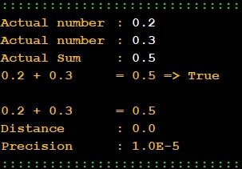

Ficha04_010
Comparing Real Numbers - Accuracy
Build an algorithm that checks whether the sum of two real numbers equals a third with an accuracy of 5 decimal places.
r1 + r2 == r3
::::::::::::::::::
A L G O R I T M O
::::::::::::::::::
1 - read the values
(r1, r2, r3)
2 - calculate the sum of the first two (+)
(sum = r1 + r2)
3 - calculate the distance from the sum to the third (abs)
( distance = abs(sum -r3)
4 - compare the distance to the precision (1.0E-5)
( distance < precision)
5 - write the information according to the comparison
( "True" or "False" )
|

|


JavaScript
// Programador Ant0ni0 M@ns0 - Ant0ni0 M@ns0
//Main Function
function main() {
document.write("Actual number \t: " );// print text
r1 = parseFloat(prompt("Actual number \t: " ,"0.0") );
document.write(r1 + "\n");// print input
document.write("Actual number \t: " );// print text
r2 = parseFloat(prompt("Actual number \t: " ,"0.0") );
document.write(r2 + "\n");// print input
document.write("Actual Sum \t: " );// print text
r3 = parseFloat(prompt("Actual Sum \t: " ,"0.0") );
document.write(r3 + "\n");// print input
var sum = r1 + r2 ;
var distance = Math.abs( sum - r3 ) ;
var precision = 1.0E-5 ;
document.write(r1 + " + " + r2 + " \t= " + r3 + " => " );
if(distance < precision ){
document.write("True" );
}else{
document.write("False" );
}
document.write("\n\n" + r1 + " + " + r2 + " \t= " + ( r1 + r2 ) );
document.write("\nDistance \t: " + distance );
document.write("\nPrecision \t: " + precision );
}
//JavaScript - Automatic translated by Algorithmi 22.05
//(c) Ant0nio M@nso domingo, 2022 set 18 23:28
Download Ficha04_010.js
Algorithmi 22.05 Student version
(c) Antonio M@nso 2022
Instituto Politécnico de Tomar - All rights reserved